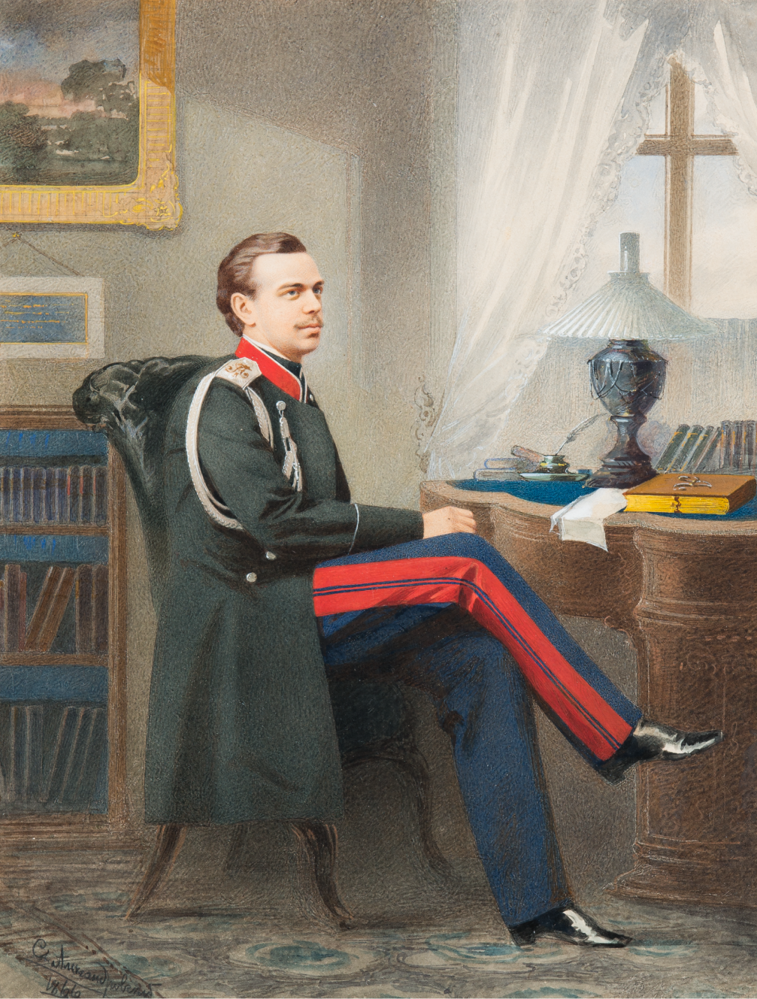

Период правления Александра III характеризуют стабильность внутренней и внешней политики, развитие производительных сил страны, подъем науки и национальной культуры.
Это было недолгое затишье перед бурями и потрясениями начала XX столетия.
Александра III современники заслуженно называли Миротворцем. Он остается единственным монархом России, во время правления которого не было ни одной войны.
Эта мирная передышка самым благотворным образом сказалась на состоянии государства и положении народа.


| I | ДЕТСТВО И ЮНОСТЬ ВЕЛИКОГО КНЯЗЯ | |
| II | СЕМЬЯ ИМПЕРАТОРА | |
| III | ВОСШЕСТВИЕ НА ПРЕСТОЛ | |
| IV | КОРОНАЦИЯ | |
| V | ВНУТРЕННЯЯ ПОЛИТИКА И КОНТРРЕФОРМЫ | |
| VI | ВНЕШНЯЯ ПОЛИТИКА | |
| VII | ПОКРОВИТЕЛЬ ИСКУССТВ |
Будущий российский император Александр III родился 10 марта (26 февраля) 1845 г. в Санкт-Петербурге. Он был вторым сыном императора Александра II и императрицы Марии Александровны и наследником престола не являлся. Занять его должен был старший брат Александра – великий князь Николай Александрович. Мальчика нарекли Александром в честь отца и в память двоюродного деда, глубоко почитавшегося в царской семье Александра I – победителя Наполеона.
Александр получил традиционное для великих князей военно-инженерное образование. В процессе учебы он изучал Закон Божий, математику, историю, русский и иностранный языки, географию, занимался верховой ездой, фехтованием. Среди его наставников были: профессор, ректор Московского университета Сергей Соловьев, Яков Грот, профессор Николаевской академии Генерального штаба полковник Михаил Драгомиров, известный юрист Константин Победоносцев. Великий князь основательно увлекался историей, музыкой, архитектурой и изобразительным искусством, особенно живописью. Основное внимание родителей и педагогов было направлено на образование наследника престола – великого князя Николая (Никсы, как его звали родные). Александра готовили к военной карьере и ничто не предвещало иного развития событий. Но 12 апреля 1865 г. наследник престола цесаревич Николай Александрович скончался от туберкулезного менингита, развившегося впоследствии случайной травмы. «Что за перемена произошла во всей моей жизни в эти часы, и какая страшная ответственность разом свалилась на мои плечи…» - вспоминал впоследствии император Александр III.
Семейная трагедия не могла стать причиной династического кризиса, поэтому дело воспитания нового наследника престола и подготовка его к управлению государством была продолжена. Император Александр II все чаще приглашал сына на важные совещания, посвящая его в дело управления огромной империей.
С началом русско-турецкой войны в 1877 г. вместе с государем на фронт отправился и цесаревич. «Саша как будущий император не может не участвовать в походе» - писал Александр II. Александру Александровичу было поручено командование Рущукским отрядом. Тяготы армейской жизни наследник престола разделил в полной мере со своими сослуживцами, добросовестно выполняя свои нелегкие обязанности. «В этот период проявились особенные черты его характера – спокойствие, медлительная вдумчивость, твердость воли, отсутствие интриг», - вспоминал генерал Н.А. Епанчин. На русско-турецкой войне он видел смерть и тяжелые раны солдат, здесь погиб его двоюродной брат князь Сергей Лейхтенбергский. Эти испытания во многом сформировали отношение Александра к военным конфликтам и он приложит все усилия, чтобы в его царствование не было пролито и капли крови русского солдата.
После войны Александр участвовал в создании Добровольного флота — акционерной судоходной компании, призванной содействовать внешнеэкономической политике правительства.